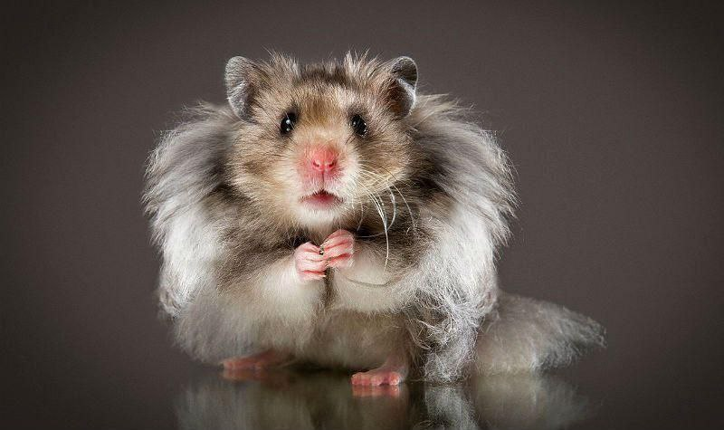

Хом’ячки – пухнасті бешкетники
Розділ 1. Хто такі хом’ячки і чому вони завойовують наші серця?
Хом’ячки – це маленькі, пухнасті грудочки щастя, які здатні підкорити
будь-яке серце. Вони люблять бігати, ховати їжу в щічках
(немов
запасаються на зиму) і інколи поводяться, наче справжні акробати в
своїй клітці.
Наприклад,
хом’ячка Семі вміє настільки швидко бігати в колесі, що здається,
ніби вона ось-ось запустить космічну місію!
Розділ 2. Що потрібно для щасливого життя хом’ячка?
Щоб ваш улюбленець був здоровий і веселий, потрібно забезпечити йому комфортні умови:
-
Клітка:
- Достатньо простора, щоб було місце для розваг.
- Обов’язково з колесом для бігу, бо хом’ячки – спортсмени за природою.
-
Їжа:
- Спеціальний корм для хом’яків.
- Свіжі овочі та фрукти (але не все підходить, наприклад, цибуля – табу!).
-
Розваги:
- Лабіринти та тунелі для досліджень.
- Жувальні палички для здорових зубів.
Розділ 3. Веселі моменти з життя хом’ячків
Хом’ячки – це справжні комедіанти. Вони можуть заснути в
найнезручнішій позі, напхати щічки так, що виглядають, як маленькі
кульки,
або ж намагатися пролізти в коробку, яка їм явно замала.
Семі одного разу заховала зернята так добре, що сама їх не
знайшла!
Отже, хом’ячки – це не просто домашні улюбленці, а справжні генератори
позитиву. Головне – правильно доглядати за ними,
і вони віддячать вам своїми кумедними витівками та безмежною милотою!